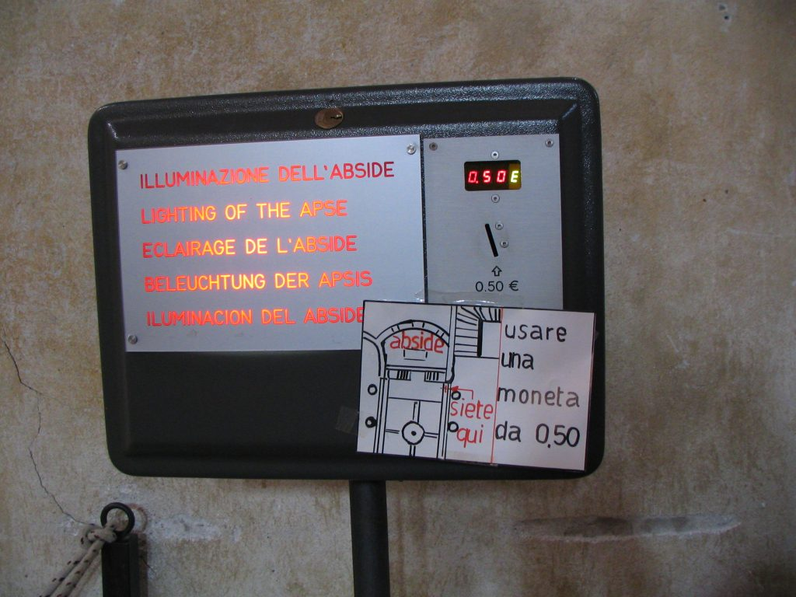
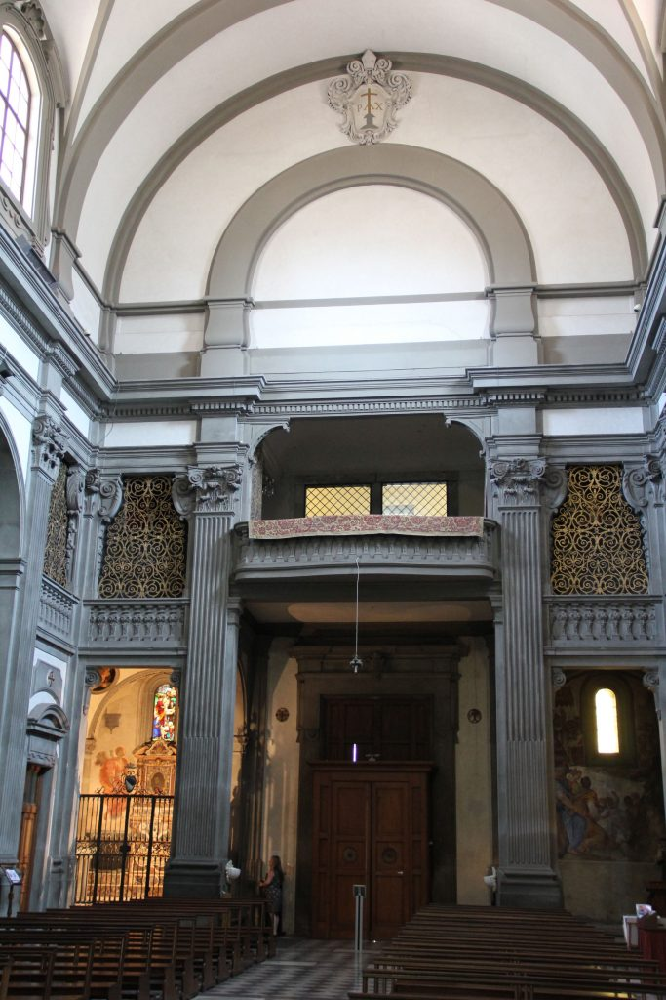

A coin-operated "light box" in a church
Churches in Italy are like small museums themselves, as they contain many pieces of art. To preserve them from damage, they are not kept constantly under artificial light (luce). However, most of the time churches provide a "light box," a paying system that lights the paintings or statues up for few minutes. This works with coins (monete).
Note how the niche on the left of the entrance is lightened up (and you can see a person standing in front of it) as opposed to the one on the right which is dark. {This is an excerpt from chapter 7 “Churches and Museums” of the eBook “Italy from the Inside. A native Italian reveals the secrets of traveling in Italy”. Buy our eBook on Amazon and leave us a review! If it’s good, you’ll make us happy, if it’s bad, you’ll make us improve. Thank you either way!}